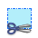
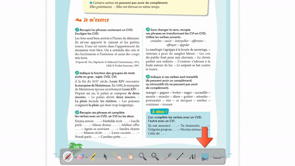
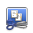
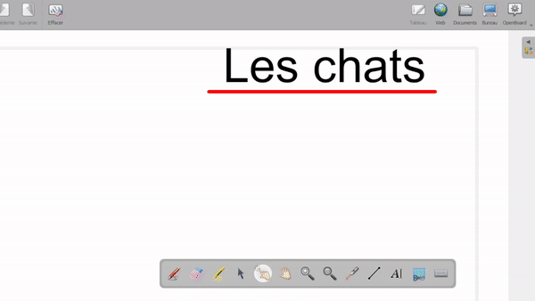
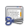

Une fonctionnalité simple et très utile
La cattura schermo ti permette di creare un istantanea dello stato della lavagna (o dello schermo) durante la lezione, per archiviare, condividere o riutilizzare i contenuti.
In modalita Lavagna
Nella palette degli strumenti, fai clic su

, poi seleziona la zona da catturare. In seguito potrai scegliere:- Aggiungi alla pagina corrente
- Aggiungi a una nuova pagina
- Aggiungi alla libreria — la cattura viene salvata nella cartella Immagini per un uso successivo.

In modalita Desktop
Passa alla modalita Desktop tramite per catturare altre applicazioni.
Sono disponibili due opzioni:
-

Cattura schermo intero - Cattura di un'area
Come in modalita Lavagna, scegli dove aggiungere la cattura.

In modalita Web
In modalita Web puoi catturare un'area dello schermo oppure catturare la scheda attiva del browser con

.